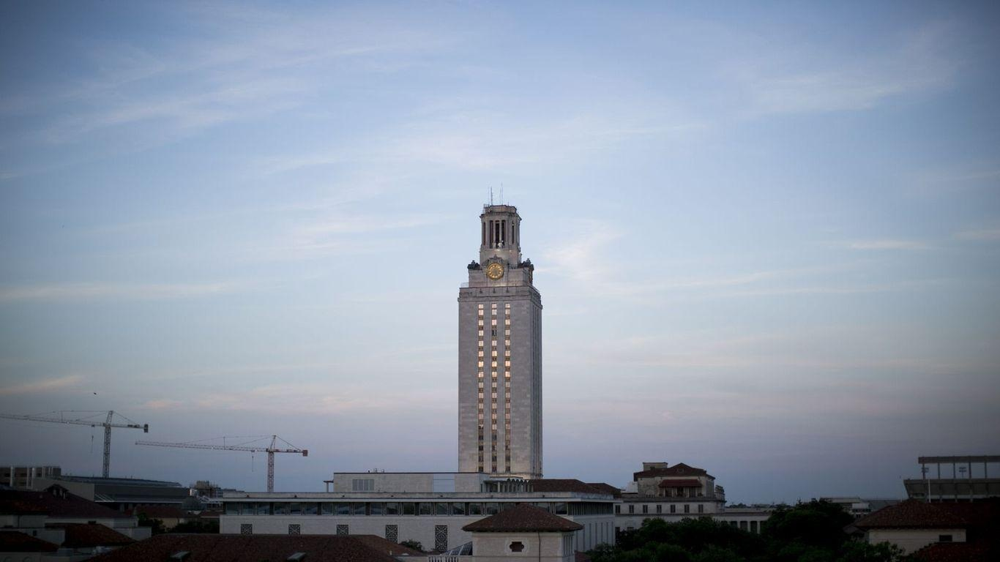

University of Texas launches conservative-minded institutesAs universities are attacked by lawmakers for being too liberal, the University of Texas is ramping up institutes and centers that cater to conservatives. Driving the news: UT announced this month that it will open a School of Civic Leadership, which will house the Civitas Institute, championed by Lt. Gov. Dan Patrick as a way to bring "intellectual diversity" and teaching on limited government and free markets. - In 2020, the university launched the Salem Center for Policy, whose mission is to help students, business leaders and policymakers "cut through the noise of public policy," per its website, "... in pursuit of human flourishing and the preservation of a free society." - That same year, the university's law school started a clinic "focused on the free exercise of religion," bankrolled by a board member of the Religious Freedom Institute. Zoom in: Over the weekend, a visiting scholar at the Salem Center made incendiary comments about "interracial crime." - "We need more policing, incarceration, and surveillance of black people," Richard Hanania tweeted in a summary of an essay he wrote for his newsletter. "Blacks won't appreciate it, whites don't have the stomach for it." - World's current second richest person and occasional Austinite Elon Musk responded to the tweet thread with: "Interesting." Between the lines: The Salem Center gets funding from prominent right-wing donors — including Dallas billionaire Harlan Crow, lately found to have paid for luxury vacations and more for U.S. Supreme Court Justice Clarence Thomas. - The Salem Center produces a podcast called "Woke-ademia," hosted by its senior scholar, about the "shift of universities from academic inquiry to political activism in support of novel and radical ideologies." - In a talk hosted by the Salem Center last year, a former COVID-19 adviser to former President Donald Trump told an audience that COVID-19 vaccines present serious safety concerns and advocated against inoculating children, the Austin American-Statesman reported. What they're saying: Axios reached out to Carlos Carvalho, executive director of the Salem Center; a university spokesperson; and Hanania for interviews. None responded. - UT has a "unique responsibility to equip and train civic leaders … and this new school reflects an expanded commitment for the next generation of leadership," university president Jay Hartzell said this month about the launch of the School of Civic Leadership. The other side: The proliferation of these centers has long concerned UT faculty members. - "It sounds like there are already donors, political donors, lined up to provide money for the university to hire people to work in these positions to form part of this institute," College of Natural Sciences professor Stuart Reichler said at a Faculty Council meeting in 2021, per the Texas Tribune, back when the Civitas Institute was known as the Liberty Institute. "I think our concern — or at least what I'm reading into the concern from the questions are — why is the university allowing itself to be politicized by the Legislature?" More Austin stories No stories could be found |
 |